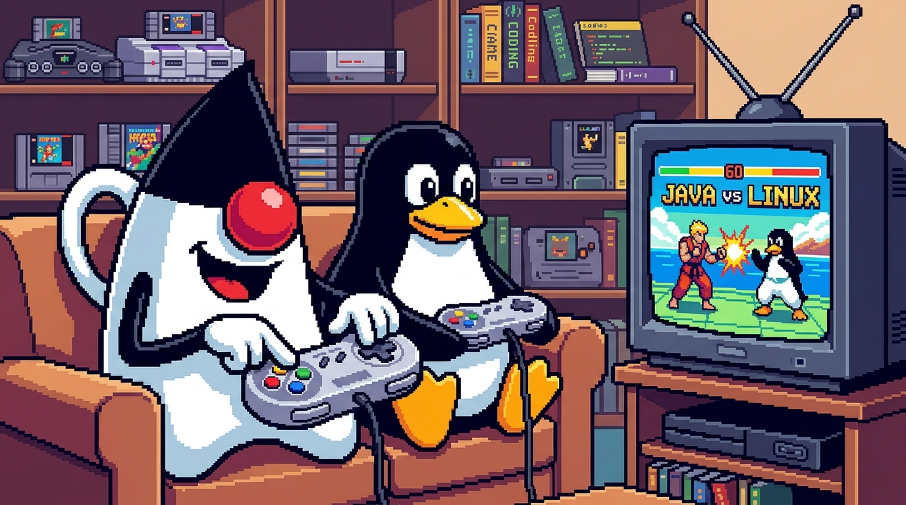
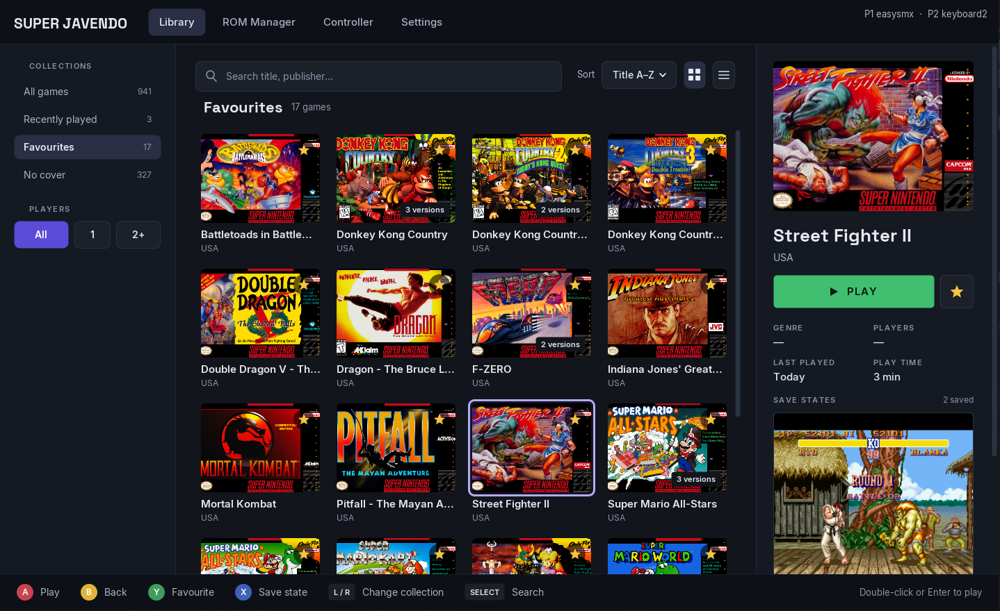

A Super Nintendo emulator,
written in Java
Built from scratch with nothing but the JDK, Swing and javax.sound. No external libraries, no native code: a small, readable, tested model of the SNES hardware.

The game library: cover grid, collections, search, save-state slots and the records stored in the game's battery save.
Why another emulator?
This project exists to re-study the architectures of the console hardware that made history and to rebuild them from scratch.
Java used to be a poor choice for this: the virtual machine and the garbage collector left no headroom for emulating several processors, two video chips and a sound subsystem in real time. With today's JIT compilers it is not only possible but pleasant: the code stays readable, portable and testable.
The SNES is the first target. The goal is a small "museum" of consoles built with the same philosophy: understand how the hardware worked, write the simplest model that reproduces it faithfully, and validate it with automated tests and test ROMs.
What it does
A complete emulator and a front end to go with it.
PPU with every mode
Modes 0 to 7, sprites, windows, mosaic, colour math, plus hi-res (modes 5 and 6), pseudo hi-res and interlace. Full-screen with F11.
SPC700 + DSP
The real IPL ROM, BRR decoding, ADSR/GAIN, noise, echo and interpolation, played at 48 kHz.
Coprocessors
SuperFX (GSU), SA-1, DSP-1, Cx4, S-DD1, OBC1 and MSU-1, on top of LoROM and HiROM with battery SRAM. ROMs can be .zip.
Save states
Four slots plus a quick slot, each with an embedded screenshot, and a "Resume" button in the library.
Game library & ROM Manager
Cover grid or list, favourites, play time, undo/redo (Ctrl+Z), duplicate handling, and dump verification against the No-Intro database.
Keyboard and gamepads
Editable profiles, several inputs per button, one profile per player, hot-plugged pads, and a pad-driven library.
Game-specific saves
The library reads high scores and best times from the battery save of games it knows. F-ZERO is the first.
Eight languages
English, Italiano, Español, Français, Deutsch, Português, Nederlands, Polski; it follows the system language.
The hardware, component by component
One Java package per hardware component, validated against test suites and against other emulators.
| Component | Status |
|---|---|
| 65816 CPU | Complete, validated against the SingleStepTests per-instruction suite. |
| Timing | Scanline scheduler (262 lines × 1364 master clocks), VBlank, H/V NMI and IRQ, joypad auto-read. |
| DMA / HDMA | Direct and indirect, including the quirks real games rely on. |
| PPU | Modes 0 to 7, sprites, windows, mosaic, colour math (main and sub screen), hi-res and interlace. |
| SPC700 / DSP | Real IPL ROM, full DSP voice pipeline, 48 kHz output. |
| SuperFX | Implemented; RAM identical to snes9x on the chip test cartridges. Star Fox, Yoshi's Island and others run. |
| SA-1 | Second 65816 with its own bus, mapper, DMA, multiplier/divider and variable-length bit reader. |
| DSP-1, Cx4 | High-level emulation of every command, checked against snes9x and bsnes on random vectors. |
| S-DD1, OBC1, MSU-1 | Implemented (S-DD1 verified on screen against snes9x). |
Accuracy is scanline-level (snes9x style), not cycle-level (bsnes style): games very sensitive to timing may diverge.
Get started
You need a JDK and a ROM you own. There is nothing to install: build one jar and run it.
-
Check your tools
JDK 25 or newer and Maven 3.9+.
java -version mvn -version -
Build
This compiles, runs the tests and produces a single self-contained jar.
git clone https://github.com/sanjeyac/super-javendo.git cd super-javendo mvn package -
Run
Without arguments it opens the game library; with a ROM it starts the game.
java -jar target/superjavendo.jar # the library java -jar target/superjavendo.jar game.sfc # start a ROM directly java -jar target/superjavendo.jar game.sfc -p1 xbox -p2 keyboard2 -
Add your games
In ROM Manager choose the folders that hold your ROMs. Covers are looked up by file name in a
covers/folder next to them.
The full guide, including macOS and Windows notes, is in INSTALL.md. No ROMs are included and none ever will be.
In-game controls
The default keyboard profile. Profiles are plain text files you can edit, or set up in the Controller screen.
| Key | Action |
|---|---|
| Arrows, Z, X, A, S | D-pad, B, A, Y, X |
| Q, W | L, R |
| Enter, Shift | Start, Select |
| F5 / F9 | Save / load the quick slot |
| 1…4 / Shift+1…4 | Save / load slot 1…4 |
| P | Pause |
| F11 | Full screen |
| Esc | Leave full screen, then quit |
Readable by design
Controllers are interchangeable strategies, profiles are plain data, and component state is serialisable so save states stay deterministic.
- 456 unit tests cover CPU, PPU, APU, DMA, the scheduler, save states, input and the front end.
- Test cartridges for the coprocessors are compared against snes9x and bsnes.
- A frame-by-frame comparison tool checks the output against snes9x with identical inputs.
cpu/ 65816 CPU
bus/ address bus, I/O registers
cart/ LoROM/HiROM, SRAM, coprocessors
dma/ DMA and HDMA
ppu/ scanline renderer
apu/ SPC700, DSP, ports
input/ controllers, profiles
games/ per-game knowledge (records)
frontend/ library, ROM Manager, settings
Snes.java wires it together, runs the schedulerKnown limits
- Scanline-accurate timing, not cycle-accurate; ROM/RAM arbitration between the CPU and the SuperFX or SA-1 is not modelled.
- Doom (SuperFX) renders with corrupted textures.
- Multitap (more than two players) and special peripherals such as the Super Scope are not supported yet.
- Gamepads on macOS and Windows use the input4j library and have not been tried on real hardware.